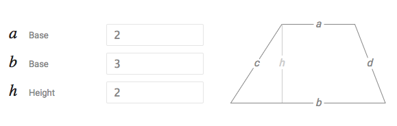

Assignment Title: What is a Computer?
By Alexander Joseph Dunne
Simple Python Program

Below is the code for my python program which calculates the area of the trapezium above and displays the answer on screen.
(CODE START)
abase = 2.0 #'abase' being the variable which represents the 2cm top base length
bbase = 3.0 #'bbase' being the variable which represents the 3cm bottom base length
height = 2.0 #the height length of the trapezium
area = abase + bbase / 2.0 * height #the variable being 'area', which has assigned the calculation alongside it
print("The area of the trapezium is", area) #the function that will appear on the screen once the calculation has been processed
(CODE END)